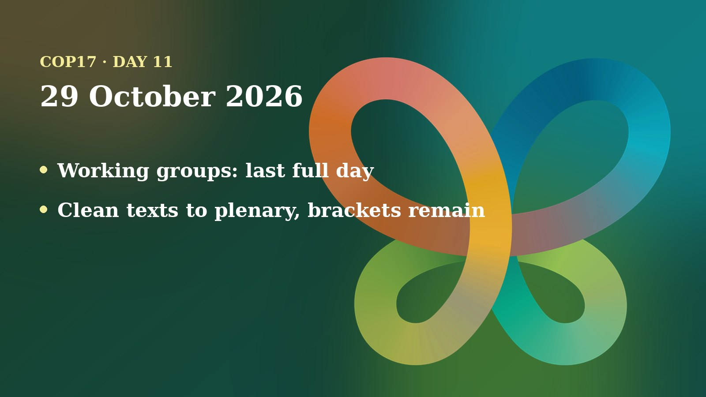

Thursday was the last full day of working-group time at COP17. Delegates cleaned text on capacity building, reporting and the way the Convention runs its meetings. The hardest item, money, was handed to a small Friends of the Chair group. And young people once again had to defend their place in the wording.
The day in negotiations
Three working-group sessions ran on Thursday in each of the two working groups. My main sources are the UN Transcripts records of those meetings. They are automatic and unofficial, so names and figures can be garbled; I use only what looks consistent and say who said it. The Earth Negotiations Bulletin issue for the day was not online when I checked.

Working Group I opened by saying it had a heavy load. In the morning meeting the chair first sent two texts on Article 8(j), the Convention's work on Indigenous peoples and local communities, to a Friends of the Chair group. It is led by Chikade Oluwakemi Egbuwalu of Nigeria and Jennifer Tauli-Corpuz, a representative of Indigenous peoples and local communities. The group then approved Annex 2 of the capacity-building text, which sets out a work plan for a global coordination entity. Brazil said its earlier concerns were addressed. Switzerland flagged a general worry about how "technology transfer" is worded across texts. Later the group settled a paragraph asking the Global Environment Facility to make sure funds reach countries well before their reporting deadlines, after the EU and the UK helped with wording in a short huddle.
The afternoon meeting turned to the monitoring framework, the set of indicators used to check progress. Parties agreed to "undertake a technical update" of the procedures for the second global review and the template for the eighth national reports before COP18. One dispute stayed open: whether to take note of extra, optional indicators listed in an annex. Russia offered a compromise that they "may be discussed in the future". Argentina and Switzerland said that was too weak, and Brazil suggested wording about a future review. The chair asked them to huddle again.
Near the end the group cleaned the text on how to make Convention meetings more effective, including terms of reference for an informal advisory group, and approved matching texts for the Cartagena and Nagoya Protocols.
Working Group II was doing similar clean-up. In its morning meeting the chair called it the group's last day of deliberation and said negotiators had spent more than five hours on forests and about four on agriculture. A forest text was approved and sent to the plenary with two alternative versions of one paragraph, both including the word "voluntary". In the afternoon meeting the group approved a text on biodiversity and health, then began a wildlife text with nine sets of brackets, including one around the word "hunting". On agriculture, Russia asked to bracket a reference to the future multi-year programme of work, arguing that this decision should shape that programme, not the other way round.
Positions and stakeholders
The biggest item was resource mobilisation, the question of where money for nature comes from and who controls it. Its two contact-group co-chairs, Iman Meliane of Tunisia and Carolina Caceres of Canada, told Working Group I that the group had met five times between 20 and 27 October. They said brackets remained on two issues, plus the whole draft sitting in outer brackets.
- Broadening who pays: eight options, labelled A to H, are still in brackets on widening the contributor base.
- Rules for the financial mechanism: criteria A to D for the permanent arrangement carry no brackets. Extra criteria E to K remain bracketed, as does their status next to the first four.
- The ministers' role: Sweden's State Secretary Daniel Westlén, who co-facilitated ministerial talks with Senegal's Minister Diouf, said a consensus is possible but "narrow". Their proposed text was posted as a non-paper.
- The chair's call: the Working Group I chair said the number of brackets could not be resolved in the room. He created a Friends of the Chair group, co-facilitated by Caceres and Meliane, to meet at 18:30 and clean the preamble, several paragraphs and the annex. He listed Brazil, Canada, Chile, China, the EU, Fiji, Norway, Russia, Saudi Arabia, South Africa, Switzerland and the UK, and kept the room open to all.
Other voices on Thursday: Greenpeace's biodiversity programme manager, Irene Wabiwa, opened a press conference by saying COP17 had so far been a stocktake and that the presidency's hoped-for implementation COP needs concrete priorities. Indigenous leaders from the Brazilian and Colombian Amazon spoke there too. Outside the negotiating rooms, COP17 President Hambardzum Matevosyan held talks with ministers on turning commitments into "tangible and measurable results", and told a lunch on links between the environmental treaties that biodiversity loss, climate change and land degradation are interconnected. He also opened an event on sharing benefits from genetic resources, and an Armenia-Germany event looked at conservation and financing partnerships, according to the COP17 website.
Numbers to know
- 5: the number of times the resource mobilisation contact group met, between 20 and 27 October, per its co-chairs.
- 8: bracketed options (A to H) on broadening the contributor base.
- 7: bracketed extra criteria (E to K) for the financial mechanism.
- 12: parties named by the chair for the finance Friends of the Chair group, with the meeting open to all.
- 9: sets of brackets left in the wildlife text when Working Group II began it.
Through a child and youth lens
I am a member of the UNICEF Global Delegation and I advocate for including children and youth in the CBD process, so I read the day through that lens. The short version: young people stayed in most texts, but only after being argued for, and children were barely named.
The clearest moment came in Working Group I, on the paragraph about who should be involved in the next global review. Philippines asked the chair to give the floor to youth speaking for other major groups. Youth said that naming Indigenous peoples and local communities, women and youth in the text mattered because a general term would erase their visibility, and ended with the slogan "Nothing about us without us." The chair thanked them but reminded the room that he wanted concrete language, not statements. Russia said it respects the importance of those groups but preferred a general term. Guatemala insisted the express reference stay. A huddle produced a compromise, "all actors other than national governments, in particular Indigenous peoples and local communities, women and youth", which the room accepted.
Working Group II had a similar scene over a text about an informal advisory group that may invite outside experts. Tuvalu, Australia and others pushed to keep experts from Indigenous peoples, local communities, women and youth named. Russia had concerns. The transcript shows a bridging formula under discussion, and I could not confirm the final wording from it. In another exchange one delegate argued that a principle should not be limited to Indigenous peoples and local communities, because it also concerns women, youth, children and persons with disabilities. That was the only mention of children I found in the working-group records.
What this means for children: decisions on money, reporting and monitoring set whether anyone counts how nature loss affects them, and who gets funding to act. Wording that names youth keeps a door open. Wording that names children is still rare. I will keep watching for that on the last day.
On my calendar today
According to my COP17 schedule, I am scheduled to speak at "Youth Priorities for Nature", organised by GYBN UK and GYBN USA, in the Green Zone from 15:45 to 16:45. I am also scheduled to co-host the Armenia Tree Project booth in the Blue Zone from 09:00 to 15:00 and again from 18:00 to 20:00. Booth hours do not block my calendar, so I am open to speaking requests.
What to watch tomorrow
- Finance: whether the Friends of the Chair group delivers clean text on resource mobilisation and the financial mechanism.
- Indicators: whether Russia, Argentina, Switzerland and Brazil settle the optional-indicators paragraph in the monitoring text.
- The closing plenary: which L documents are adopted, and which bracketed paragraphs are sent up unresolved.
- Youth wording: whether the references to youth and children survive in final texts.
Follow where I am each day on my COP17 schedule, and the daily news in the Newsroom.
Sources
- Working Group I, 6th meeting, automatic transcript (UN Transcripts, 29 Oct 2026). https://transcripts.un.org/en/asset/k19/k191jcccyp
- Working Group I, 7th meeting, automatic transcript (UN Transcripts, 29 Oct 2026). https://transcripts.un.org/en/asset/k11/k11yxcr4bn
- Working Group II, 11th meeting, automatic transcript (UN Transcripts, 29 Oct 2026). https://transcripts.un.org/en/asset/k1h/k1hwl76wu6
- Working Group II, 12th meeting, automatic transcript (UN Transcripts, 29 Oct 2026). https://transcripts.un.org/en/asset/k1n/k1nm91862r
- Press Conference: COP17: What future do you want? (UN Transcripts, 29 Oct 2026). https://transcripts.un.org/en/asset/k1n/k1nk889fsx
- COP17 High-Level Segment Nears Conclusion (COP17 Yerevan website, 29 Oct 2026). https://www.cop17yerevan.am/en/articles/%D5%B6%D5%B8%D6%80%D5%B8%D6%82%D5%A9%D5%B5%D5%B8%D6%82%D5%B6%D5%B6%D5%A5%D6%80/cop17-high-level-segment-nears-conclusion
- Strengthening Synergies among Environmental Agreements Discussed at COP17 (COP17 Yerevan website, 29 Oct 2026). https://www.cop17yerevan.am/en/articles/%D5%B6%D5%B8%D6%80%D5%B8%D6%82%D5%A9%D5%B5%D5%B8%D6%82%D5%B6%D5%B6%D5%A5%D6%80/strengthening-synergies-among-environmental-agreements-discussed-at-cop17
- Fair and Equitable Sharing of Benefits from Genetic Resources (COP17 Yerevan website, 29 Oct 2026). https://www.cop17yerevan.am/en/articles/%D5%B6%D5%B8%D6%80%D5%B8%D6%82%D5%A9%D5%B5%D5%B8%D6%82%D5%B6%D5%B6%D5%A5%D6%80/fair-and-equitable-sharing-of-benefits-from-genetic-resources
- Armenia-Germany Cooperation on Biodiversity Conservation and Financing (COP17 Yerevan website, 29 Oct 2026). https://www.cop17yerevan.am/en/articles/%D5%B6%D5%B8%D6%80%D5%B8%D6%82%D5%A9%D5%B5%D5%B8%D6%82%D5%B6%D5%B6%D5%A5%D6%80/armeniagermany-cooperation-on-biodiversity-conservation-and-financing